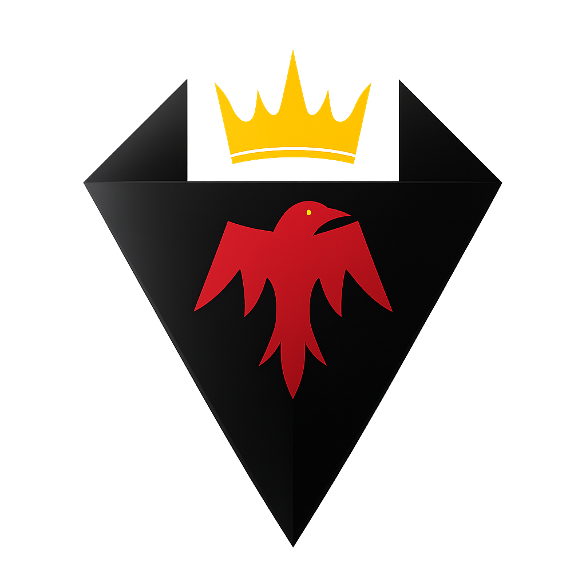

Crow<n>wolf Studio
Crow<n>wolf Studio is all about creating unique and engaging Roblox experiences. We blend scripting with storytelling to craft games that surprise, entertain, and stick with players. Whether it’s a quick challenge or an epic journey — if it’s fun, we’re building it.
Behind the Name
The name "Crow<n>wolf" symbolizes a blend of strategy and strength — the crown for ambition and leadership, the crow for mystery and adaptability, and the wolf for loyalty and passion.
Games in Development
We're currently working on exciting new titles — stay tuned for sneak peeks, devlogs, and early-access gameplay reveals. Follow us to be the first to play!